Everything you can download
The five course modules as PDF, the 3D models, all 38 course plates, the Wiring Lab data and the standalone interactive tools. Everything here is free to use in teaching, study and your own projects under CC BY-SA 4.0.
The course modules as PDF (older edition)
Print-ready A4 documents with learning objectives, review questions with worked answers and workshop job sheets. Together they run to 248 pages and 41.1 MB.
Older edition. The PDFs are the earlier, shorter edition of each module. The online course on this site is the current, fuller version, with more chapters, worked examples and every equation. Sign in with a free account to download the PDFs.
| No. | Module | Length | Size | Link |
|---|---|---|---|---|
| 1 | FoundationsHistory, types, anatomy, controls, physics of riding, workshop safety, tools and measurement | 35 pages | 10.2 MB | Download PDF |
| 2 | The engineFour- and two-stroke cycles, top and bottom end, lubrication and cooling, compression and leak-down testing | 43 pages | 7.5 MB | Download PDF |
| 3 | Fuel, ignition and electrical systemsMixture, carburettors, fuel injection, emissions, ignition, battery, charging, starting and wiring | 51 pages | 6.6 MB | Download PDF |
| 4 | Drivetrain and chassisClutch, gearbox, final drive, frame and steering, suspension, wheels and tyres, brakes, service schedule | 61 pages | 10.9 MB | Download PDF |
| 5 | Electric motorcyclesMotors, controllers and regeneration, cells, packs and the BMS, charging, battery swapping, high-voltage safety | 58 pages | 5.9 MB | Download PDF |
Prefer to read on screen? The same text is on the Learn pages, one chapter at a time, with the 3D models and plates built in.
3D models on Sketchfab
Eleven complete motorcycles and scooters (a pioneer motor-bicycle of 1901, a 1920 V-twin, a modern V-twin cruiser, a four-stroke roadster, a two-stroke motocross bike, an automatic scooter, a step-through, a boda boda, a café racer, a superbike and an electric scrambler), 53 components from the crankshaft and valves to the PMSM motor, and 305 parts cut out of the eleven bikes: every wheel, handlebar, engine, frame and more. The models are published in the Motopedia collection on Sketchfab, where you can download them in the formats Sketchfab offers.
You can also rotate and inspect every model on this site first, in the 3D models library.

All 38 course plates
Blueprint-style technical drawings made for the course, grouped by system. Select a plate to download the full-resolution PNG.
Whole motorcycles 5


Powertrain 9

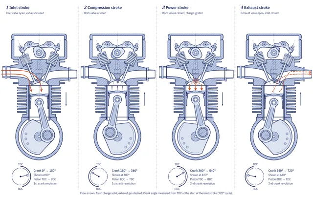
F07Four-stroke cycle
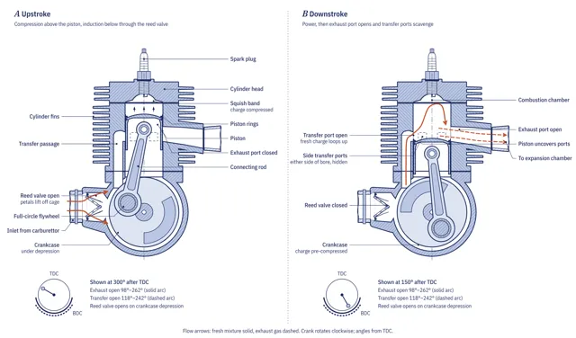
F08Two-stroke cycle
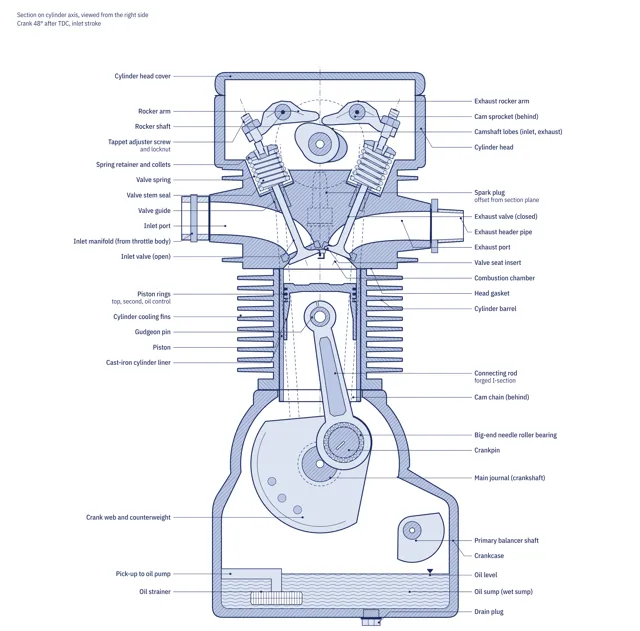
F09Single-cylinder four-stroke engine, section
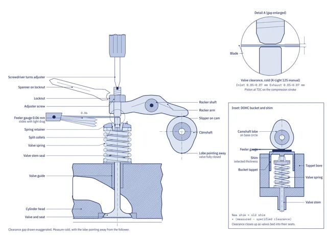
F10Valvetrain and valve clearance
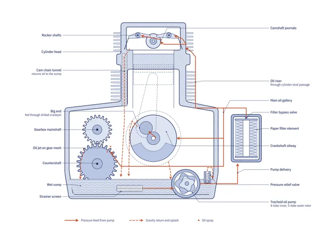
F11Wet-sump lubrication circuit
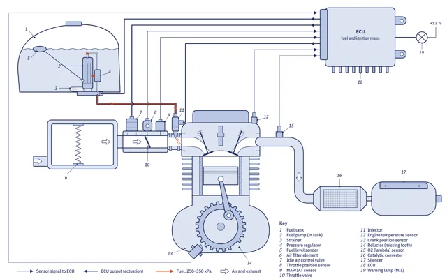
F12Electronic fuel injection system
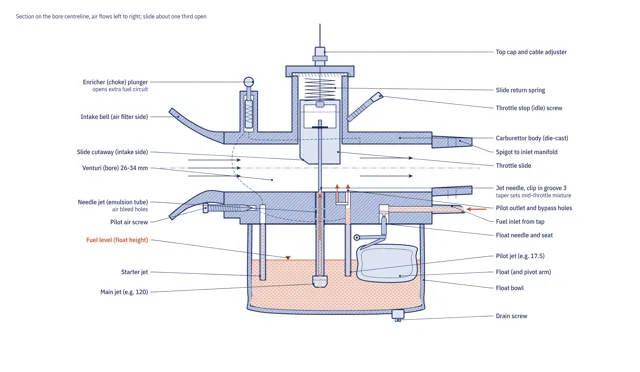
PT01Slide carburettor in section
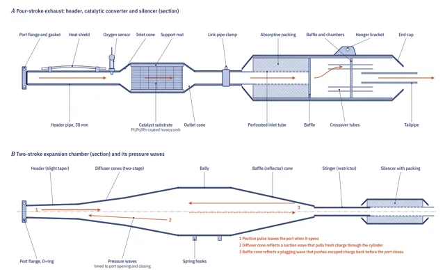
PT02Exhaust systems in section
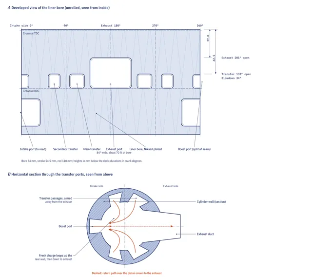
PT03Two-stroke cylinder portsTransmission 6


Chassis 3


Wheels and tyres 3


Electrical and electric drive 5


Sixteen motorcycle types
The plates from the motorcycle types page: one labelled side elevation for each type, from the 1885 pioneer to the electric moped. Select a plate to download the 2400 px PNG; the SVG files sit next to them in types/plates/.

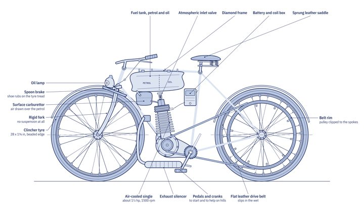
T01Pioneer motor-bicycle
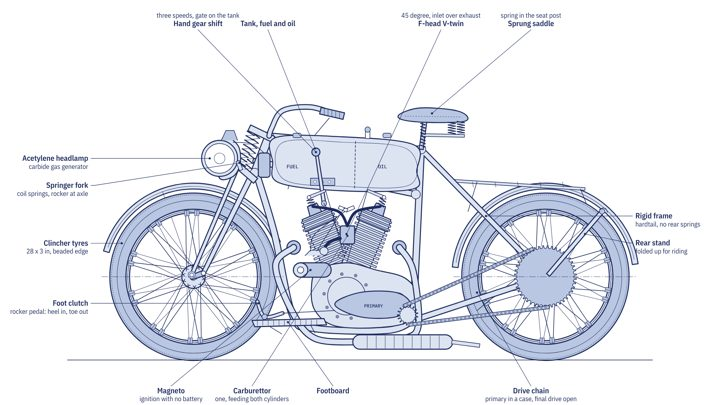
T02Vintage V-twin
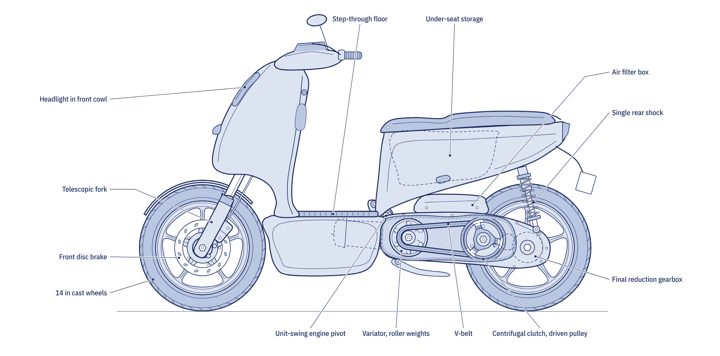
F04Scooter
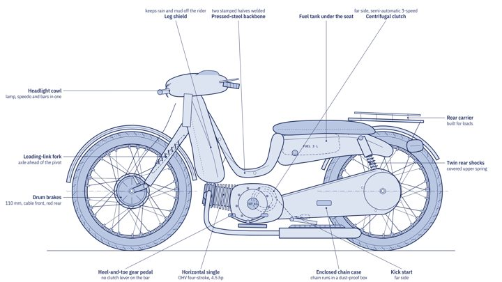
T03Step-through underbone F01Standard roadster
F01Standard roadster

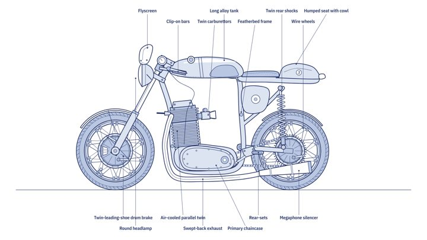
T05Café racer
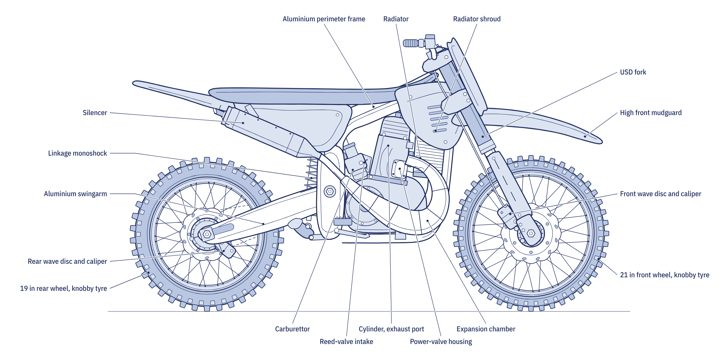
F02Motocross
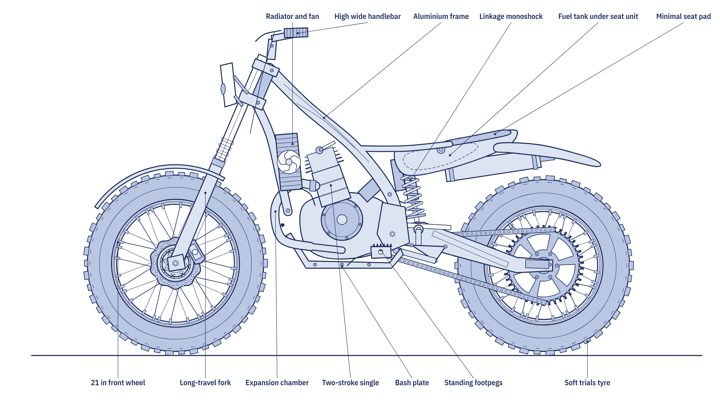
T11Trials
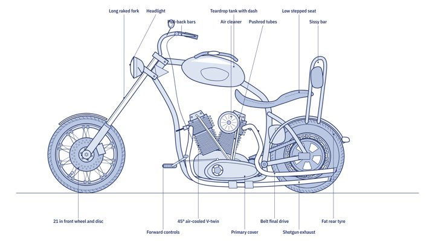
T06Cruiser and chopper
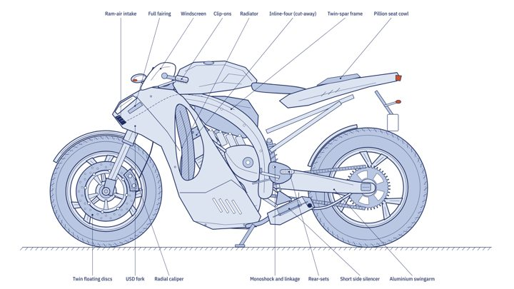
T07Superbike and sport bike
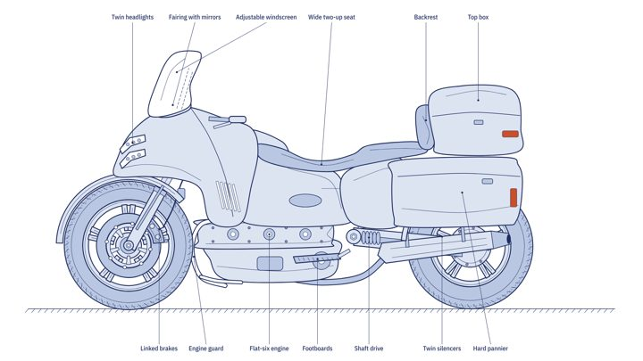
T08Touring
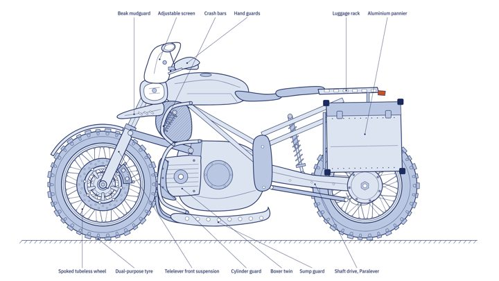
T09Adventure T04Boda boda commuter
T04Boda boda commuter

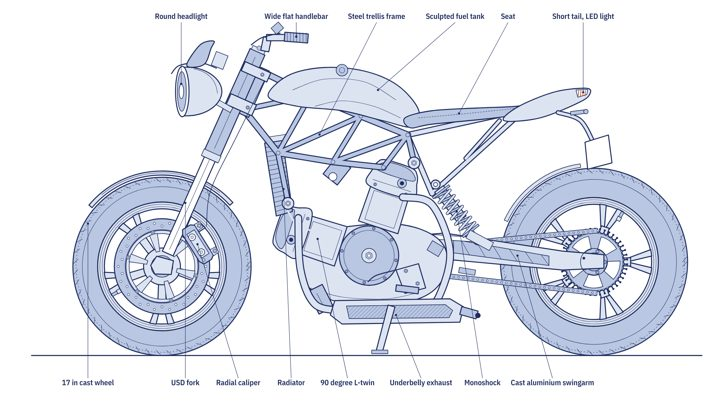
T10Naked and streetfighter
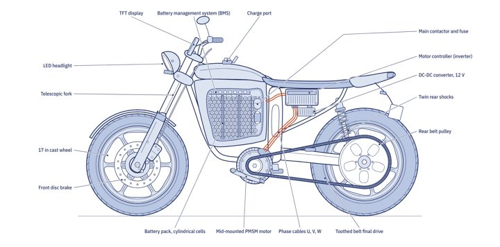
F03Electric motorcycle
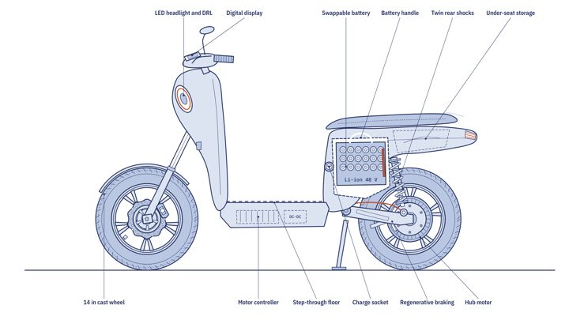
T12Electric moped and e-bodaInteractive tools and data
The cockpit and the Wiring Lab each run as a single HTML file with no server. Save them to use offline or to embed in your own learning platform.
Controls cockpit
A rider’s-eye cockpit of a 125 cc road motorcycle in which every control works, with live instruments and engine sound.
Wiring Lab
The main harness, starting, charging and ignition circuits, with fault simulation and colour codes.
How you may use these files
Text, course plates, 3D models, renders and the interactive tools are released under the Creative Commons Attribution-ShareAlike 4.0 licence (CC BY-SA 4.0). You may copy, print, translate, adapt and redistribute them, including in paid training, as long as you credit the source and release adaptations under the same licence.
Photographs are excluded. Photographs from the Transitions Lab collection, used for module covers and in chapters, are included for illustration only and are not covered by the licence.
How to attribute
Place this line next to the material, with a link to the site where possible:
Motopedia, Transitions Lab, CC BY-SA 4.0
For an adapted plate, add “adapted from” in front, for example: “Adapted from Motopedia, Transitions Lab, CC BY-SA 4.0”.